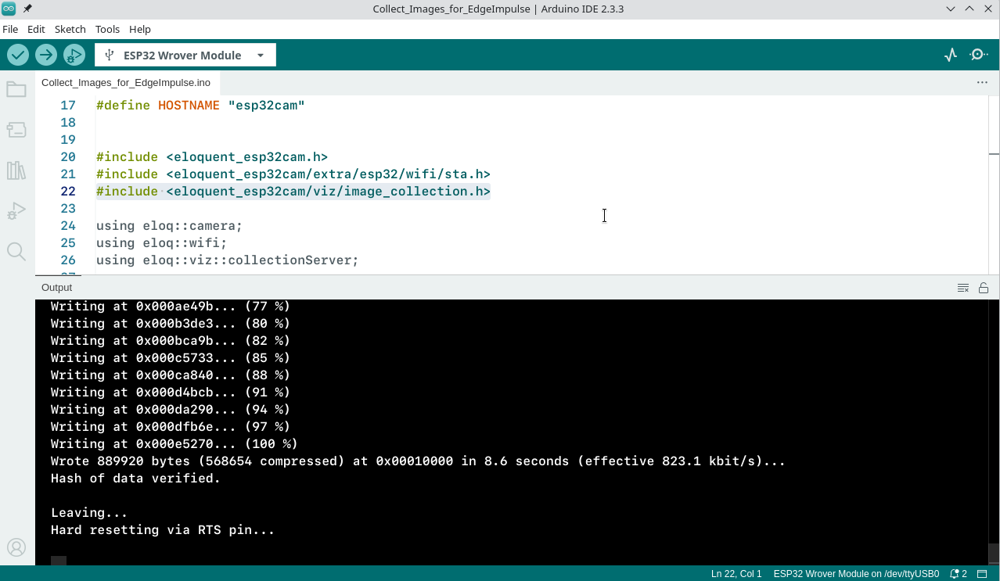

6 ESP32 Object Detection
- สร้าง Account ใน edge impulse
ติดตั้ง Library EloquentEsp32cam

- เลือก ตัวอย่าง Collect_Images_for_EdgeImpulse.ino
| Collect_Images_for_EdgeImpulse.ino |
|---|
| /**
* Collect images for Edge Impulse image
* classification / object detection
*
* BE SURE TO SET "TOOLS > CORE DEBUG LEVEL = INFO"
* to turn on debug messages
*/
// if you define WIFI_SSID and WIFI_PASS before importing the library,
// you can call connect() instead of connect(ssid, pass)
//
// If you set HOSTNAME and your router supports mDNS, you can access
// the camera at http://{HOSTNAME}.local
#define WIFI_SSID "TrueGigatexFiber_uS7_2.4G"
#define WIFI_PASS "itbakery@9"
#define HOSTNAME "esp32cam"
#include <eloquent_esp32cam.h>
#include <eloquent_esp32cam/extra/esp32/wifi/sta.h>
#include <eloquent_esp32cam/viz/image_collection.h>
using eloq::camera;
using eloq::wifi;
using eloq::viz::collectionServer;
void setup() {
delay(3000);
Serial.begin(115200);
Serial.println("___IMAGE COLLECTION SERVER___");
// camera settings
// replace with your own model!
// camera.pinout.wroom_s3();
camera.pinout.aithinker();
camera.brownout.disable();
// Edge Impulse models work on square images
// face resolution is 240x240
camera.resolution.face();
camera.quality.high();
// init camera
while (!camera.begin().isOk())
Serial.println(camera.exception.toString());
// connect to WiFi
while (!wifi.connect().isOk())
Serial.println(wifi.exception.toString());
// init face detection http server
while (!collectionServer.begin().isOk())
Serial.println(collectionServer.exception.toString());
Serial.println("Camera OK");
Serial.println("WiFi OK");
Serial.println("Image Collection Server OK");
Serial.println(collectionServer.address());
}
void loop() {
// server runs in a separate thread, no need to do anything here
}
|
- compile มี error ให้ทำการแก้ไขไฟล์ใน Library ที่ได้ทำการ Download มา


แล้ว upload อีกครั้ง

- เปิด browser ip ที่แสดง http://192.168.1.184
- กด Start collection เพื่อทำการ บันทึก รูปเพื่อไปใช้สำหรับการ train
-
กด Download รูปภาพ

-
Label รูปภาพ

-
ตัวอย่าง ข้อมูลที่ได้ แต่ละภาพจะมี Label ทุก ไฟล์

-
ตัวอย่าง เก็บภาพกล่อง box

-
ตัวอย่าง เก็บภาพกล่อง Mouse

Upload รูปภาพ ไปยัง Edge impulse

- เพิ่ม Image เข้าสู่ โปรเจค

- เลือกวิธีการ upload ด้วยการ upload ทั้ง folder


- upload data set ที่เหลือ ทั้งหมด
Labeling Queue
- หลังจาก upload เรียบร้อย ขั้นตอนต่อไป คือการทำ labeling

- ใช้ mouse ลาก คร่อมรูปภาพ และกด save label
- label ทุกภาพที่อยุ่ที่ Queue จน Queue เป็น 0
Impulse design > Create impulse
- เลือก Board ปลายทางในการทดสอบ

-
Add process box
-
Add image block
-
Add learning block


เปลี่ยนเป็น ภาพ Gray โดยไปที่ เมนู Image
ไปยัง เมนู Object Detection

หลังจาทก Training ก็จะทำการ Deploy เลือก Arduino library

Change Target Espressif ESP-EYE

Build มาเป็น Zip file

add zip file to Arduino

เลือกไฟล์ ที่ได้ จาก edge impluse

up load สำเร็จ

open file esp32_camera
- save file esp32_camera_impulse.ino
Download Code EdgeImpulse.zip